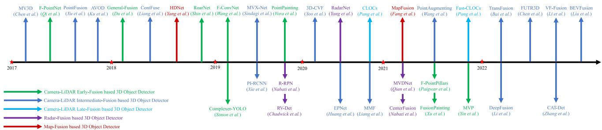
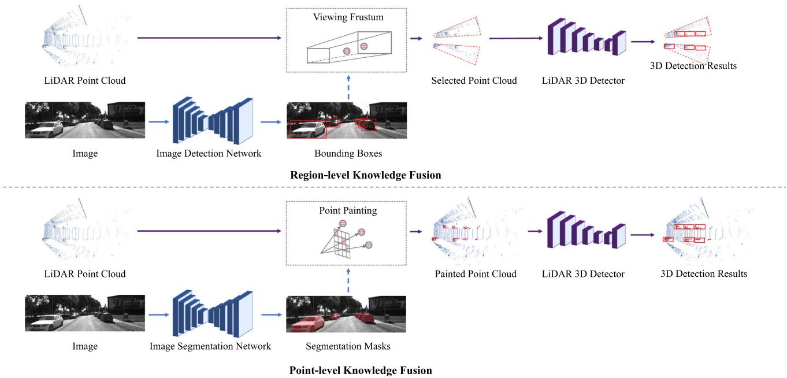
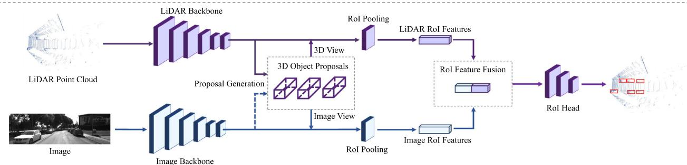
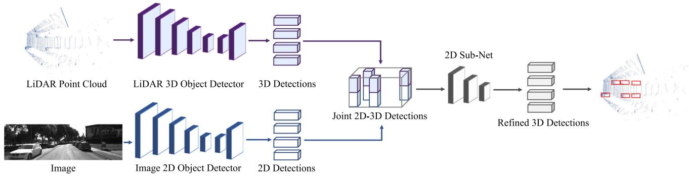
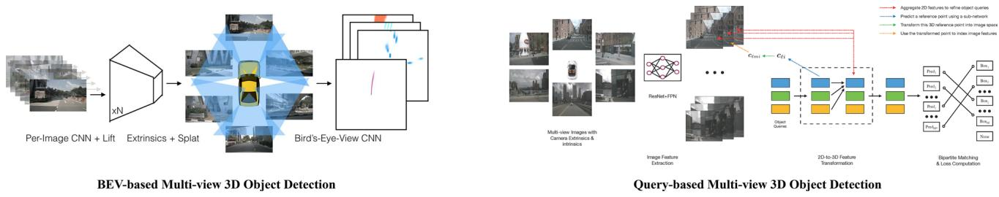

阶段 J · 基础零件 / Lesson 0197
三维检测综述（2023）下：多模态融合与度量
点装进容器只是做了一半；剩下两件事同样要命——相机什么时候插进来，以及「这个框到底算不算对」由谁说了算 🧭
🎯 主题：多模态融合的三个位置 + 评测度量的四种口径
👥 作者：Jiageng Mao、Shaoshuai Shi、Xiaogang Wang、Hongsheng Li
📅 2023 · 3D Object Detection for Autonomous Driving: A Comprehensive Survey
本节目标
读完你应该能：① 说清激光雷达与相机各自缺什么、为什么要把两者合起来用；② 用一句话说清 Early / Intermediate / Late 三种融合「插在哪一步」，以及各自的代价；③ 说清为什么「相机投到 BEV」这件事被深度估计卡住；④ 看懂 $AP$ 的定义，并说出四种命中口径（$AP_{3D}$、$AP_{BEV}$、$AP_{center}$、$AP_{Hungarian}$）的差别；⑤ 养成一个习惯：看到 mAP，先问 IoU 阈值和命中口径是什么。
和前面课程怎么接
度量这一节直接接第九季。0180 教的是「看到轨迹误差，先问真值有多准」；本课要教的是同一件事的另一个版本——看到检测分数，先问命中判据是什么 。而 0184 的检索评测（亚米级真值、成功判据）与本课的 AP 阈值，正好说明「不同任务用不同的尺子」这条第九季的核心洞见。另外，上一课（0196 ）讲过的 BEV 表示，在这一课会以「多视图相机怎么投成一张俯视图」的形式再出现一次；而第五季 0095 、0096 讲的是 SLAM 侧的多传感器融合——注意：那套「紧耦合 / 松耦合」的分法与本课的「早 / 中 / 晚融合」不是一回事，本课会专门提醒。
0. 为什么还要把相机拉进来
上一课整节都在讲激光点云怎么被组织成可计算的结构。但一个纯粹的点云检测器有两个绕不过去的短板：
远处的点太少。 自驾场景里绝大多数点都挤在雷达附近，离得远的物体只能拿到寥寥几个点 ——点数不够，几何就撑不起一次可靠检测。没有纹理、没有颜色。 你从点云里读不出「那块牌子写的是什么」，也分不清「那是一辆真车还是一块形状像车的广告牌」。
而相机恰好相反：纹理稠密、便宜、能读字 ，但它没有深度 ——而且这个「没有」不是小毛病，后面你会看到它把整整一支路线卡住了。
所以把两者合起来是很自然的事。这篇综述用了整整一章（第 5 章）讲多模态三维检测，而它最核心的一条分类线非常清晰：按「融合发生在检测流水线的哪一步」来分。
★ 一个必须提前说清的区分
本课的「Early / Intermediate / Late Fusion 」是按融合发生在流水线的哪一步 分的；而 SLAM 里常说的「紧耦合 / 松耦合」是按状态量是否放在一起估计 分的。两套分法不能混用 ——第五季 0095 、0096 讲的是后者。

原图注（Fig. 16）： Chronological overview of the multi-modal 3D object detection methods.（中译：多模态三维目标检测方法的时间线总览。）怎么看这张图： 这是一条时间轴，每一格是一个年份、里面排着当年的代表方法。看的时候不必记住名字，盯住两件事 ：① 这条线起得比纯激光那一支晚很多（多模态是后来的事）；② 越往右，方法越密集，且名字里带 BEV、Fusion、Trans 的越来越多——那正是本课要讲的「融合位置往 BEV 走 + 融合算子往注意力走」两条趋势。
1. 融合发生在哪一步：Early / Intermediate / Late
多模态融合的分类线只有一条，但这条线非常清晰：图像的知识是在什么时候、以什么形式，进到点云那条流水线里去。 三种答案对应三个名字。
① Early-Fusion（早融合）：在喂进检测器之前就混
做法是：先用一个二维网络（检测或分割）在图像上干活，然后把它的结果「贴」到点云上，再整包送进一个纯激光检测器。它下面再分两种：
region-level（区域级） ：先用二维框在图像上找到物体，把二维框拉成一个三维视锥（frustum），用它去点云里筛选出候选区域 ，只在区域里做三维检测。代表是 F-PointNet。point-level（点级） ：把图像上每个像素的语义标签逐个贴到对应的三维点上 ，让每个点「长」出一个额外的语义通道。代表是 PointPainting。
优点： 它能当成一个通用的预处理外挂——几乎任何激光检测器都能被这样「刷一层」。缺点： 二维网络与三维检测是串行 的，延迟叠加在一起。
原文还给了一条很明确的比较结论：点级融合一般比区域级更有效 ——因为区域级做的只是「缩小搜索范围」，而点级才真正提供了细粒度的语义。
② Intermediate-Fusion（中融合）：在骨干、提案或 RoI 头里混
做法是让两条路各自先跑一段，在中间某个环节把特征混起来。代表方法很多：MV3D、AVOD、TransFusion、BEVFusion 等。
优点： 融合得最早、最深，框的质量是三种里最好的 。缺点： 图像与点云是异质的、视角还不同 ——一个是像素网格、一个是散点，一个是从相机中心看出去、一个是从雷达看出去，对齐很难，算力也贵。
原文给了两条趋势判断：近年最流行在 BEV 空间里融合 （精度与效率双赢）；融合算子则一路演进——从拼接（concatenation）→ 连续卷积 → 注意力 → Transformer 。
③ Late-Fusion（晚融合）：只在「框」这一层合
做法最省事：二维检测器和三维检测器各干各的，各自出框；然后再把两边的框做配对，用一个稀疏张量去学「这一对框的置信度」。代表是 CLOCs。
优点： 最省、最解耦——两条线互不干扰，坏了一条另一条还能跑。缺点： 完全用不到中间特征 ，图像里丰富的语义信息拿不进来，所以天花板是三种里最低的 。
原文对「融合位置」的总判断
一句很有信息量的话
原文的趋势判断是：融合位置本身无所谓，任何位置都能涨点 ；真正在演进的是「在哪融合最划算」——近年答案偏向 BEV 空间，而融合算子则一路走向 Transformer。
怎么理解这句「无所谓」？ 它其实是在说：早期那些「早融合更好还是晚融合更好」的争论，结论是「都能用」。 真正决定成败的不是位置，而是「你在那个位置上能不能把两种数据的特征真正对齐」。这也解释了为什么 BEV 会胜出——BEV 是一个天然对两种传感器都友好的公共坐标系。

原图注（Fig. 17）： An illustration of early-fusion based 3D object detection methods.（中译：基于早融合的三维目标检测方法示意。）怎么看这张图： 看它的箭头走向——图像那条路是「先走完」的 ：图像 → 二维检测/分割 → 结果贴到点云上 → 才进入三维检测器。这就是「早融合」的形状：两条线一前一后，不是并排。 串行带来的延迟叠加，正是这一支最大的代价。

原图注（Fig. 18）： An illustration of intermediate-fusion based 3D object detection methods.（中译：基于中融合的三维目标检测方法示意。）怎么看这张图： 对比上一张，这张图里两条线是并排往前跑的 ，在中间某个节点才交汇——交汇点可能就是骨干、提案层或者 RoI 头。原文说这一支的框质量最好，代价是对齐难、算力贵。看图时找那个「交汇点」在哪，就能判断这个方法是哪一类中融合。

原图注（Fig. 19）： An illustration of late-fusion based 3D object detection methods.（中译：基于晚融合的三维目标检测方法示意。）怎么看这张图： 两条线各跑各的、各自出框，只在最后才把两边的框拿到一起配对 。这就是「晚融合」的形状。它的好处是解耦、省事；坏处也一眼看得出来——中间那些丰富的特征，两条线谁也没给对方用。 所以原文说它的天花板最低。
2. 三种融合并排看（本课的核心图）
把上面三节收拢成一张流水线图。请把注意力放在三根箭头插在什么位置 上。
同一条检测流水线：点云 → 骨干 → 提案 → RoI 头 → 输出框
点云
骨干
提案
RoI 头
输出框
图像
二维检测 / 分割网络
Early：插在点云之前
Intermediate：插在骨干 / RoI 里
Late：插在输出框之后
Early：把图像知识灌进点云（贴语义标签 / 拉视锥裁剪）
代价：两网串行，延迟叠加
Intermediate：在骨干、提案或 RoI 头里混特征
代价：异质 + 视角不同，对齐难、算力贵
Late：各自出框，只在框这一层做匹配
代价：用不到中间特征，天花板最低
原文判断：融合位置无所谓，任何位置都能涨点；近年最流行在 BEV 空间融合
这张图在画什么： 上面一排是三维检测的主流水线（点云 → 骨干 → 提案 → RoI 头 → 输出框），下面一排是相机支线（图像 → 二维检测/分割网络），中间三根不同颜色的箭头标出三种融合各插在哪里。怎么看这张图： ① 绿箭头最短、位置最靠前 ——它插在「点云」之前，所以图像那条线必须先走完；② 橙箭头插在中间 ——两条线可以并行跑一段再交汇；③ 红箭头最靠后 ——它插在「输出框」之后，两条线全程互不干扰；④ 箭头的位置越靠前，融合越深、框质量越好，代价也越大；越靠后越省，但能拿到的信息越少。要记住的一句话： 这三种融合不是「谁更先进」的关系，而是「拿多少信息换多少代价」的三档选择。 原文的结论是「位置无所谓，任何位置都能涨点」。
互动判断
「晚融合」的代价是什么？
两条线互相干扰
用不到中间特征
3. 相机那一侧：多视图与 BEV，以及被深度卡住的那一支
镜头切到纯相机那一侧。这里有一个值得记住的事实：相机做三维检测，比激光雷达难得多。 原文给的数字非常刺眼——KITTI 数据集上，单目方法最好的 moderate $AP_{3D}$ 只有 16.34% ，而立体（双目）方法最好能到 64.66% 。原文还补了一句诊断：单目这一支的误差里，定位误差占了大头 ——也就是说，它「认得出这是什么」，但「说不准它在哪」。
多视图（Multi-view）：先从多个相机得到一张统一的俯视图
纯相机阵营最成功的一支叫 多视图 ：用环视的多个相机，把它们各自的图像投成一张统一的鸟瞰图 ，然后在这张图上做检测。你说它像什么？——它其实就是本季上一课讲的 BEV，只不过输入从点云换成了图像。
这一支的里程碑有三个：
LSS 提出「lift-splat-shoot 」三步：把每个像素按一个预测出来的深度分布「举」成三维空间里的一条射线（lift），再「拍」到 BEV 平面上（splat），最后交给下游任务（shoot）。BEVDet 把它细化成一条四步流水线。BEVFormer 换了个思路：在 BEV 网格上放一批 query，用空间交叉注意力 去看各个相机的图像，再用时序自注意力 把历史帧的信息也拉进来。
但这一支有一个致命的软肋，原文直呼其为「主要瓶颈」：从相机到 BEV 的变换，如果没有准确的深度，这个问题就是病态的（ill-posed）。 换句话说：把二维投到三维，必须知道每个像素多远；不知道，就只能猜。 所以纯相机这一支的进展，几乎等同于「深度估计的进展」。
不过它也有一个很硬的成绩：nuScenes 上多视图方法最好做到 54.0% mAP / 61.9 NDS ——原文专门点明，这个成绩已经超过了一些经典的激光雷达检测器 。这是个值得记住的转折点：纯视觉路线第一次在实打实的榜单上追到了激光阵营的门口。

原图注（Fig. 15）： An illustration of multi-view 3D object detection methods. Figures are from Philion and Fidler (2020) and Wang et al. (2022b).（中译：多视图三维目标检测方法示意。）怎么看这张图： 找两个东西。① 多个相机的视野怎么被拼到一起 ——注意它是往一个俯视平面上拼的，而不是简单地把几张图横着摆；② 那个「举起来」的动作 ：每个像素先沿着一条射线被放到三维空间里，再落到 BEV 平面上。这条射线的长度就是深度 ——图上如果画出了不同长度的射线，那正是在说「深度不确定」这件事。
环视相机
lift：每条射线举多长？
splat：拍到 BEV 平面
左
前
右
后
车
深度不确定
射线可长可短
俯视格子
检测在这张图上做
没有准确深度，这一步就是病态的——原文把它直呼为这一支的主要瓶颈
可一旦投成功：nuScenes 上多视图最好 54.0% mAP / 61.9 NDS，已超过一些经典激光检测器
这张图在画什么： 左格是环视相机（左 / 前 / 右 / 后），中间那辆车是自车。中格是「lift」：每个像素被沿着一条射线放进三维空间——但射线该有多长，取决于深度，而深度是不知道的 ，所以画了一条虚线标注「可长可短」。右格是「splat」：把这些射线落到一张俯视格子上，检测就在这张图上做。怎么看这张图： ① 从左到右是 LSS 那三步里的前两步；② 整张图的关键在中格那几条黄色射线 ——它们的长度不是量出来的，是猜出来的；③ 所以右格那张俯视图的质量，直接取决于「猜深度猜得准不准」；④ 这也解释了为什么纯视觉那一支的进步，几乎总是跟着深度估计的进步一起发生。要记住的一句话： 从图像到 BEV 这一步，卡在深度上 。而激光雷达做的事情，恰好就是直接把深度量出来——这就是两个传感器最本质的互补。
4. 度量：怎么算「这个框算对」
前半课都在讲「怎么产生框」。但一个检测器报出 69.2% mAP 这样的数字时，还有一个问题没回答：由谁说了算，一个框算不算「检测对了」？
先看 AP 本身。原文沿用了二维检测里的定义（出自 Lin 等 2014 那篇）：
这句话在说什么： $p(r)$ 是「查准率—查全率」曲线（PR 曲线）。这个积分的意思是：把查全率 $r$ 从 0 扫到 1，每一步取「查全率不低于 $r$ 时的最高查准率」，再对查全率积分。
用人话再说一遍： 就是把 PR 曲线下方的面积算出来。曲线越靠近右上角（又准又全），面积越大。
★ 但真正的差别不在这个积分式里。 原文有一句很关键的话：三维检测与二维检测的唯一实质差别，在于「怎么算命中」 ——也就是「一个预测框和哪个真值框配对、配对到什么程度才算数」。而这件事在不同数据集上有四种口径 ：
口径
命中怎么判
用在哪
它放宽/收紧了什么
$AP_{3D}$
预测框与真值框的三维 IoU 超过阈值
KITTI
最严：位置、尺寸、高度、朝向全都要对
$AP_{BEV}$
只在俯视图 上算 IoU
KITTI
丢掉高度这一维 ，对高度/遮挡误差更宽容，数字天然比 $AP_{3D}$ 好看
$AP_{center}$
中心点距离 小于阈值就算命中nuScenes
不再要求框重合，只看中心；配合 NDS （NuScenes Detection Score）把尺寸、朝向、速度误差一起算进去
$AP_{Hungarian}$
用匈牙利算法 做全局一对一匹配
Waymo
匹配是全局最优而非贪心；并给出 APH ，把朝向误差当系数乘进 AP
这张表为什么重要？ 因为它解释了一个很常见的困惑：同一个检测器，换个数据集分数就变，很大一部分不是模型变了，而是「命中判据」变了。 尤其 $AP_{3D}$ 与 $AP_{BEV}$ 的差别——后者把高度那一维直接丢了，所以分数天然更高。上一课那张三格图（点 / 体素 / BEV）说的正是这件事的根：高度被压平了，判命中时自然更宽容。
另外两个记号也值得知道：nuScenes 的 NDS 不只看位置，还看尺寸、朝向、速度，是一个综合分；Waymo 的 APH 把朝向误差当系数乘进 AP，意思也很清楚——在三维里，「朝哪」被当成了和「在哪」同等重要的事 。（这与上一课讲的 3D 框参数里「朝向单独占一个 $\theta$」是同一个关切。）
① AP_3D：三维 IoU
② AP_BEV：俯视 IoU
真值框
预测框
高度和位置都差了一截 → 三维重合很小
三维 IoU 不达标 → 不算命中
真值框
预测框
从天上往下看：两个脚印重叠了一大半
俯视 IoU 达标 → 算命中，分数天然更高
③ AP_center：只量中心点距离
距离
小于阈值就算命中（nuScenes）
④ AP_Hungarian
真值
预测
全局一对一匹配＋朝向误差当系数
这张图在画什么： 四种「算不算命中」的口径。① 三维 IoU：真值框（绿虚线）和预测框（橙实线）在三维里位置、高度都错开，重合很小，判不中；② 俯视 IoU：同样这两个框，从天上往下看，两个脚印重叠了一大半，判中了；③ 中心点距离：不看框重合，只量两个中心隔多远；④ 匈牙利匹配：把真值和预测做一次全局的一对一配对（注意连线不是就近贪心，而是整体最优），并把朝向误差当系数算进去。怎么看这张图： ① 先对着 ① 和 ② 看——同样的两个框，只因为「看不看高度」，判定结果就变了 ；② 再想一下 ③：连框重合都不看了，只看中心，口径又松了一层；③ 最后看 ④ 的连线，注意它的连法不是「谁近连谁」 ，而是让整体代价最小——这就是「全局一对一」。要记住的一句话： 同一个检测器在不同榜单上分数不同，很大一部分是「命中判据」不同，不是模型变了。 所以看到 mAP，先问两句：用哪套口径？IoU 阈值多少？
连回第九季。 0180 教的是「看到轨迹误差，先问真值有多准」；0184 的检索评测用的是亚米级真值与「成功判据」。本课这一节是同一个纪律的第三站：看到检测分数，先问命中判据与 IoU 阈值。 三件事合起来就是第九季那句核心洞见——不同任务用不同的尺子，而且尺子的刻度必须说清楚。
还有一处需要如实指出：原文自己承认 AP 这类指标有缺陷。 它举的例子是「近处漏检与远处漏检在 AP 里罚得差不多，但两者的实际危险性差很多 」——也就是说，AP 这套尺子并不直接衡量安全性 。原文也提到了一些往这个方向努力的替代指标（例如需要预训练规划器的 PKL、需要重建物体边界的 SDE），但它们各自也都有代价。
5. 它不完美在哪：速度这条线，以及原文给出的四个未来方向
本季每个零件都要讲「它不完美在哪」。多模态与度量这两块，毛病都非常具体。
① 多模态必然更慢，早融合尤其
原文的数据很实在：早融合与多视图这两类，一般都要 100 毫秒以上，不满足实时 。少数做得快的：3D-CVF 75 毫秒、MMF 80 毫秒；而晚融合的 CLOCs 是 150 毫秒、Fast-CLOCs 是 125 毫秒。原文还给了一个特别刺眼的对照：某个多模态方法涨了 8.8% mAP，却把耗时从 70 毫秒拉到了 542 毫秒。
请注意这个对照的教益： 论文里那 8.8% 的数字很亮，但那 542 毫秒意味着它一秒钟连两帧都跑不到。只看精度的表格会把这种代价藏起来。
② 相机那一侧的天花板仍然很低，而且「不是认不出，是说不准」
单目最好只有 16.34% moderate $AP_{3D}$（KITTI），而立体 64.66%。原文的诊断是「定位误差占主导 」——它认得出那是什么，但说不准在哪里。这与 SLAM 的关切其实是同一个方向：位置不准，一切后续都悬。 而多视图那一支虽然成绩亮（nuScenes 54.0% mAP），却被深度估计卡住。
③ 评测指标本身有缺陷
前面提过：AP 忽视安全性——近处漏检与远处漏检罚得差不多，但危险性差很多 。而更贴近安全性的替代指标又各有代价（PKL 需要预训练 planner，SDE 需要重建物体边界）。
④ 原文给出的四个未来方向
综述最后列了四条「还没解决」的路，每一条都写得很具体：
Open-Set（开集检测）
现有方法都在闭集上训练与评测，类别只有车、人、骑行者这些基本类，事故场景与稀有类别根本不在覆盖范围内 ——所以它「无法识别未知类别」。需要能从开放世界里学习的检测器。原文点名了一篇早期尝试作为「一个好的开始」。
Interpretability（可解释性）
深度检测器是黑箱。原文列了三个没被回答 的问题：网络在点云里到底是怎么认出对象的？遮挡与噪声怎么影响输出？它需要多少上下文？
Efficient Hardware（高效硬件）
三维算子对 GPU 不如图像算子友好 ——因为点和体素是稀疏、不规则的。所以需要为三维算子专门优化的硬件；而新传感器（固态激光雷达、带多普勒的激光雷达、4D 雷达）会反过来启发检测器的设计 。原文点名了一篇「开创性的硬件工作」。
End-to-End（端到端自驾系统）
只追 AP 可能并不是系统最优。应当从规划器的反馈里去学检测器 ——换句话说，检测器不只要「看得准」，还要「对下游的决策有用」。
第四条尤其值得 SLAM 的人想一想，因为它和本季的暗线是同一件事：一个零件的指标好看，不等于整个系统好用。 SLAM 系统里的检测器也是同一个道理——它真正要服务的是「位姿估得准不准、地图建得对不对」，而不是榜单上的第几位。
连回第八季：0155 、0156 讲的动态环境处理，正是拿检测/分割的结果去剔动态点。而本课告诉你两件事：第一，这些前端要 100 毫秒量级起步；第二，它们的误差分布是有偏的（近处和远处的漏检代价完全不同）。 这两条加起来，就是「为什么 SLAM 不能只靠一道语义闸门，必须再加几何一致性检查 」的完整理由。
读完你应该能回答
1. 为什么要把相机和激光雷达合起来？
激光雷达几何准、不受光照影响，但远处点太少 、没有纹理与颜色 ；相机纹理稠密、便宜、能读字，但没有深度 。两者恰好互补。
2. Early / Intermediate / Late 各插在哪一步？
Early 插在点云之前（图像结果贴到点上 / 拉视锥裁剪）——串行、延迟叠加；Intermediate 插在骨干、提案或 RoI 头里——框质量最好，但对齐难、算力贵；Late 插在输出框之后（各自出框再匹配）——最省最解耦，但用不到中间特征、天花板最低。
3. 原文对「融合位置」的总判断是什么？
位置无所谓，任何位置都能涨点。 真正在演进的是「在哪融合最划算」——近年偏向 BEV 空间 （因为它对两种传感器都友好），融合算子则从拼接 → 连续卷积 → 注意力 → Transformer 。
4. 纯相机那一支被什么卡住？
被深度 卡住。相机到 BEV 的变换，没有准确深度就是病态的——原文直呼其为这一支的主要瓶颈。所以它的进展几乎等同于深度估计的进展。（单目最好 16.34% moderate $AP_{3D}$，立体 64.66%；多视图靠环视 + 显式投 BEV，在 nuScenes 上做到 54.0% mAP，已超过一些经典激光检测器。）
5. AP 的定义是什么？四种命中口径差在哪？
$AP=\int_0^1\max\{p(r'|r'\ge r)\}dr$，就是把 PR 曲线下的面积算出来。三维与二维的唯一实质差别在「怎么算命中」 ：$AP_{3D}$（三维 IoU，KITTI）、$AP_{BEV}$（俯视 IoU，丢掉高度所以更宽容）、$AP_{center}$（中心距离，nuScenes，配 NDS）、$AP_{Hungarian}$（全局一对一匹配，Waymo，配 APH 把朝向误差当系数）。
6. 为什么看到 mAP 要先问 IoU 阈值与命中口径？
因为同一个检测器换个榜单分数就变，很大一部分不是模型变了，而是命中判据变了 。这与第九季 0180 的「先问真值多准」、0184 的「成功判据是什么」是同一条纪律。
课后练习
SLAM 里说的「紧耦合 / 松耦合」和本课的「早 / 中 / 晚融合」，为什么不能混着说？
展开查看答案
因为两套分法回答的是不同问题。
「早 / 中 / 晚融合」问的是「融合发生在检测流水线的哪一步」 ——是数据进来之前、中间某层、还是最后出框之后。
「紧耦合 / 松耦合」问的是「状态量是不是放在一起估计」 ——是同一个滤波器/优化问题里一起估，还是两条线各自估完再来对齐结果。
举例：一个把 IMU 和相机放进同一个状态向量的 VIO（如第五季
0095 讲的那类系统）是「紧耦合」，但它在「早/中/晚」这条轴上根本没有位置——因为它不是在融合两种
检测结果 ，而是在融合两种
测量 。
混用会导致你说的话无法被别人对齐到同一个坐标系里。
为什么 $AP_{BEV}$ 的分数天然比 $AP_{3D}$ 好看？这与上一课的哪张图直接相关？
展开查看答案
因为 $AP_{BEV}$ 只在俯视图上算 IoU，把高度这一维丢掉了 。一个预测框即使在高度上完全错位，只要平面位置对，在俯视图上仍然会重合得很好——所以判命中更容易，分数更高。右格（BEV） 直接相关：那张图已经告诉你「高度被压成一两个统计量」，本课只是把这件事翻译到分数上。实用结论： 跨论文比较数字之前，必须先对齐口径——$AP_{3D}$ 和 $AP_{BEV}$ 是两个不同的尺子，不能直接比大小。
原文说「融合位置无所谓，任何位置都能涨点」。如果这句话成立，那么真正决定多模态方法成败的是什么？
展开查看答案
真正决定成败的是「在那个位置上能不能把两种数据的特征真正对齐」 。原文的数据支持这一点：点级融合一般比区域级融合更有效——因为区域级只做「缩小搜索范围」，点级才提供细粒度语义；而全文的趋势是「近年最流行在 BEV 空间融合」，因为 BEV 是一个对相机和激光雷达都天然的公共坐标系 。位置只是形式，对齐才是内容。 这也解释了为什么融合算子会一路从拼接演进到注意力、再到 Transformer——后两者更擅长处理「两个异质来源之间的对应关系」。
原文批评 AP「忽视安全性」：近处漏检与远处漏检罚得差不多。请说明这件事对一个 SLAM 系统意味着什么。
展开查看答案
它意味着
你不能把「检测器榜单上的分数」直接当成「对系统安全的贡献」 。一个把远处漏检刷掉的模型可能分数更高，但对行车安全的价值反而更低。
对 SLAM 的具体含义有两层：① 如果这个检测器被用来剔动态点（如第八季
0155 、
0156 的做法），那么「漏检」的分布就决定了哪些动态点会污染位姿；② 更重要的是，
误差是有偏的 ——不是均匀地错，而是在特定距离、特定场景下错得更多。这种有偏误差，正是「必须再加几何一致性检查」的另一个理由：
你没法用一个统计数字去抵消一个系统性偏差。
原文给的四个未来方向里，哪一条与 SLAM 的关系最直接？为什么？
展开查看答案
End-to-End（端到端自驾系统） 这一条最直接。原文说：只追 AP 可能并不是系统最优，
应当从规划器的反馈里去学检测器 。
这背后的逻辑是：
指标好看 ≠ 系统好用。 把它放大到 SLAM 上就是——检测/分割前端真正要服务的是「位姿估得准不准、地图建得对不对」，而不是榜单上的名次。这与本季反复出现的那条暗线（
精度 vs 实时性 vs 可用性 ）是同一件事。
另外三条也都有间接关联：
Interpretability 关系到你能不能信任它的输出；
Efficient Hardware 直接决定这些零件能不能装到车上（原文还特别提到新传感器会反过来启发检测器设计——这正是本课
0195 讲的那一层）；
Open-Set 关系到「遇到没见过的物体怎么办」。